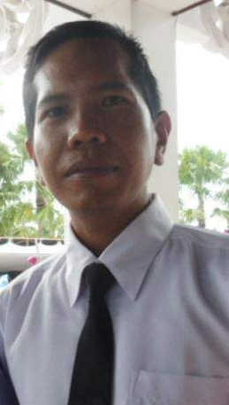

MEET OUR TEAM
Meet the people behind B17. Our team is built under 2020 DIGITALENT Project. This website is our latest work to show our creation in web designing.
Aries Wahyudi
Ketua / Compiler & Publisher

Yosi Aristiawan
Anggota / Extras Designer

Amrullah
Anggota / Header Designer
Arif Widakdo
Anggota / Footer Designer
AE
Anggota / Extras Designer